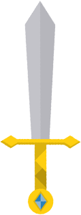

<!DOCTYPE html>
<html>
  <head>
    <meta charset="utf-8">
    <title></title>
    <script src="js/react.min.js"></script>
    <script src="js/react-dom.min.js"></script>
    <script src="js/browser.min.js"></script>
    <script src="js/jquery-3.1.1.min.js" type="text/javascript"></script>
    <style media="screen">
      *{
        padding: 0;
        margin: 0;
      }
      body{
        font-family: "Helvetica Neue",Helvetica,Arial,sans-serif;
        height: 3000px;
        border: 1px solid #000;
        position: relative;
      }
      .top{
        width: 17px;
        display: inline-block;
        font-size: 12px;
        position: fixed;
        right: 10px;
        bottom: 50px;
        display: none;
        cursor: pointer;
      }
      .top img{
        display: block;
        width: 10px;
        height: 15px;
        margin: 0 auto;
      }
    </style>
  </head>
  <body>
    <div id="dropDown"></div>
    <script type="text/babel">
    class Top extends React.Component {
      constructor(props) {
          super(props);
          this.handleClick=this.handleClick.bind(this);
      }
      // 点击返回顶部
      handleClick(e){
         $('body,html').animate({scrollTop:0},400);
      }
      // 页面发生变化的时候触发
      componentDidMount() {
        $(window).scroll(function(){
          var topHeight=$(window).scrollTop();
          console.log(topHeight);
          if (topHeight>500){
            //当滚动条的位置处于距顶部1000像素以下时，就是大于1000象数时，跳转出现
            $(".top").fadeIn(250);
          }else{ //否则就消失
            $(".top").fadeOut(250);
          }

        })
      }

      render() {
        var topHeight=$(window).scrollTop();
        console.log(topHeight);

          return (
            <div className="top" onClick={this.handleClick}><u>top</u></div>
          );
      }
    };

    ReactDOM.render(
      <Top/>,
      document.getElementById("dropDown")
    );
    </script>
  </body>
</html>
